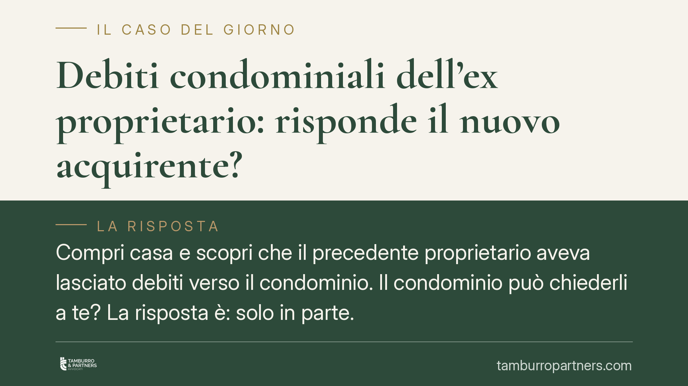

Debiti condominiali dell'ex proprietario: risponde il nuovo acquirente?
Compri casa e scopri che il precedente proprietario aveva lasciato debiti verso il condominio. Il condominio può chiederli a te? La risposta è: solo in parte. La legge fissa un limite temporale preciso e distingue tra spese ordinarie e straordinarie. Capire chi paga cosa evita esborsi indebiti e consente di recuperare quanto anticipato.

Il fatto
È una scena ricorrente. Si acquista un appartamento, si prende possesso delle chiavi e, poco dopo, arriva la richiesta dell'amministratore: il venditore aveva morosità pregresse verso il condominio. La domanda del nuovo proprietario è immediata: devo pagare debiti che non ho contratto io?
La questione non si risolve con un sì o con un no. Dipende dal periodo a cui i debiti si riferiscono e dalla natura delle spese.
Inquadramento normativo
Il riferimento è l'art. 63, comma 4, delle disposizioni di attuazione del codice civile. La norma prevede che chi subentra nei diritti di un condomino è obbligato, in solido con il venditore, al pagamento dei contributi relativi all'anno in corso e a quello precedente.
In pratica: il condominio può rivolgersi al nuovo acquirente per riscuotere gli arretrati maturati nell'annualità in corso al momento dell'acquisto e in quella immediatamente antecedente. Per i debiti più risalenti, invece, il nuovo proprietario non risponde: l'amministratore dovrà agire nei confronti del venditore.
La "solidarietà" significa che il condominio può chiedere l'intera somma di quel biennio a uno qualsiasi dei due obbligati. Chi paga, però, non resta senza tutela (ne parliamo più avanti).
Spese ordinarie e spese straordinarie: la distinzione decisiva
Un punto spesso frainteso riguarda le spese straordinarie, come il rifacimento della facciata o il consolidamento di un tetto.
Secondo l'orientamento consolidato della Cassazione Civile, per l'individuazione del soggetto obbligato non conta il momento in cui i lavori vengono eseguiti o le fatture pagate, ma il momento in cui l'assemblea ha deliberato la spesa. Chi era proprietario alla data della delibera è tenuto a sostenere quel costo.
Esempio: l'assemblea approva il rifacimento del tetto a gennaio; l'immobile viene venduto a marzo; i lavori partono a settembre. L'obbligo di contribuzione grava sul venditore, che era proprietario quando la spesa è stata deliberata, e non sull'acquirente.
Resta ferma, verso il condominio, la responsabilità solidale del biennio prevista dall'art. 63. La delibera rileva nei rapporti interni tra venditore e acquirente.
Implicazioni pratiche per chi acquista
Chi compra un immobile in condominio deve mettere in conto due rischi.
Il primo: ricevere una richiesta di pagamento per morosità pregresse del venditore, entro il limite del biennio. È una somma che va corrisposta al condominio, salvo poi recuperarla.
Il secondo: scoprire delibere di spesa straordinaria approvate prima del rogito ma non ancora saldate. Anche in questo caso il condominio può bussare alla porta del nuovo proprietario per la quota del biennio.
Lo strumento di tutela è l'azione di regresso: chi paga un debito che spettava al venditore può agire contro quest'ultimo per ottenere il rimborso di quanto anticipato. È un diritto, ma comporta tempo, costi e l'onere di rintracciare un venditore non sempre solvibile.
Per questo la prevenzione, in fase di acquisto, vale più del recupero successivo.
Cosa fare in concreto
- Richiedi la liberatoria condominiale prima del rogito: chiedi all'amministratore un'attestazione scritta sulla situazione contabile del venditore e su eventuali morosità.
- Verifica i verbali delle ultime assemblee: controlla se sono state deliberate spese straordinarie non ancora pagate e a chi competono.
- Inserisci nel preliminare una clausola che ponga a carico del venditore ogni debito condominiale anteriore al rogito, con eventuale trattenuta di una somma a garanzia fino alla verifica.
- Conserva ogni documento: rogito, verbali, comunicazioni dell'amministratore. Serviranno se dovrai esercitare il regresso.
- Consigliamo di far valutare la posizione a un legale prima di pagare somme che potrebbero non competerti: distinguere il debito del biennio da quello prescritto o non dovuto evita esborsi indebiti.
Conclusione
Il nuovo acquirente non eredita ogni pendenza del venditore. Risponde, in solido, solo dei contributi del biennio; per le spese straordinarie l'obbligo interno segue la data della delibera. Le verifiche preventive in sede di compravendita restano la difesa più efficace.
Contributo informativo a cura di Tamburro & Partners - Avv. Giuseppe Tamburro. Non costituisce parere legale.
Ogni condominio ha una storia a sé.
Se gestisci un'amministrazione e vuoi un confronto su una specifica questione condominiale, scrivi allo studio. Ti rispondiamo entro un giorno lavorativo.